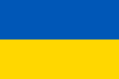

Украина — государство в Восточной и Центральной Европе. Население — 40 997 699 постоянных жителей и 41 167 336 человек наличного населения[12] (34-е место в мире)Перейти к разделу «#Численность и расселение». Общая площадь — 603 549 км² (44-е место в мире); крупнейшее по площади государство, полностью находящееся в ЕвропеПерейти к разделу «#Границы». Столица и крупнейший город — Киев. Государственный язык — украинскийПерейти к разделу «#Языки»
Флаг Украины и видео с её красотами:
